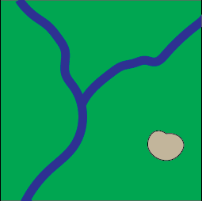
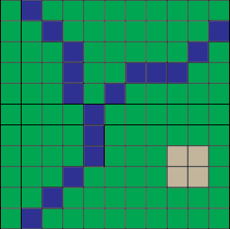

Phil White
Earth Sciences & Environment Librarian
outpw.github.io/findgis.html
Points
Lines
Polygons
Cells
...& their Associated Attributes
Points, Lines, Polygons
Cells or Pixels
Vector: 
Raster: 